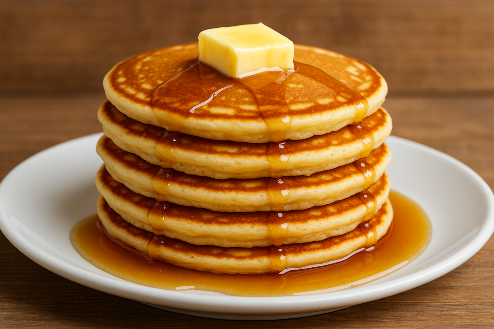

Home
Pancakes

Description
Pancakes are a classic breakfast made from a simple batter of flour, eggs, and milk. Cooked on a hot pan until golden, they’re soft inside and slightly crisp outside—perfect for any morning
Topped with syrup, fruit, or even bacon, pancakes are versatile and loved worldwide. Easy to make and always comforting, they bring joy to the table with every bite.
Ingredients
- 1 cup all-purpose flour
- 2 tablespoons sugar
- 1 tablespoon baking powder
- 1/2 teaspoon salt
- 1 cup milk
- 1 egg
- 2 tablespoons melted butter
- 1 teaspoon vanilla extract (optional)
Steps
- In a bowl, mix flour, sugar, baking powder, and salt.
- In another bowl, whisk together milk, egg, melted butter, and vanilla extract.
- Pour the wet ingredients into the dry ingredients and stir until just combined.
- Heat a non-stick skillet or griddle over medium heat and lightly grease it.
- Pour about 1/4 cup of batter onto the skillet for each pancake.
- Cook until bubbles form on the surface and edges look set, then flip and cook the other side until golden brown.
- Serve warm with butter, syrup, or your favorite toppings.